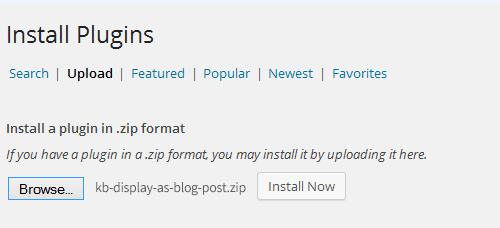
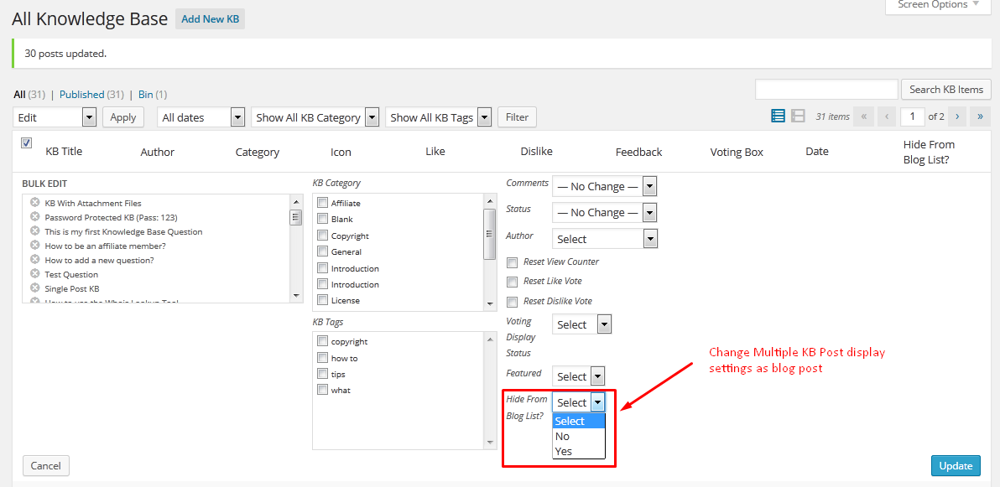

Note:
Not sure about country and language code? Get your Country Code and Language code.
If you want any support, Please feel free to contact me via my profile page https://codecanyon.net/user/xenioushk.
Ajaxified FAQ Search is a powerful addon for BWL Advanced FAQ Manager that allows you're user to find Frequently Ask Questions quickly & easily from you're website.
This addon comes with 25+ animated modal window with sticky button for the best user experience(UX). Plugin comes with almost zero configruation and zero coding requirement feature.
Addon also brings extensive option panel that allows you to configure search window settings according to you're need. You can set window color , Turn ON/OFF search sticky button, Change sticky button colors, set Pagination, set animation and many more.

You need at least WordPress version 4.8+ installed for this plugin to work properly.
It is strongly recommended that you always use the latest stable version of WordPress to ensure all
known
bugs
and security issues are fixed.
Other requirements:
To install a plugin, you must first upload the plugin files and then activate the theme. The plugin files can be uploaded in two ways:
Step 01: Go to WP admin dashboard and click on Plugins >> Add New.

Step 02: Click on Upload Plugin.

Step 03:
Once plugin successfully uploaded in your server you will get an message to activate it.
Click on "Activate Plugin" Link and plugin will be ready to use .
After activating plugin, you will redirect in plugins section of wp-admin panel and show new installed
plugins
information in there.
- Once you completed installation process, plugin will automatically include all Knowledge Base items with you're blog posts according to date order. But, You can control Knowledge Base posts display using bulk/quick edit.

- Addon comes with built-in show/hide custom meta box option to control Knowledge Base posts display. This way, you can easily handle view status, while you're adding/editing KB posts.

- If you want to change settings for single Knowledge Base post, then you can use quick edit(inline editing) option.

- If you want to change settings for multiple Knowledge Base post, then you can use bulk edit option.

- Addon allows you to upload featured image for Knowledge Base items. This way, you can easily set featured image for Knowledge Base Post and display with blog post(Theme Support Required).

From version 1.0.3 we added an unique option to include Knowledge base posts in to Regular blog post RSS feed. To enable this option go to Plugin Option panel > General tab and you will get an option "Include KB in Blog Feed? ". Just turn it ON and KB post automatically included in to blog feed.
Ajaxified FAQ Search WordPress Plugin offers amazing translation feature. Besides the English, you can easily translate the plugin text into other languages. Check following steps to translate "Ajaxified FAQ Search" WordPress plugin.
Step 01: To translate the plugin texts, please download and install Poedit software in your computer. Here goes the download link- https://poedit.net/download
Step 02: Next, navigate to /wp-content/plugins/bwl-advanced-faq-manager/lang/. You will get a file named en_EN.po.
Step 03: Our Plugin text-domain is 'afs-addon'. Now, we want to translate our theme text in to Dutch language. So, copy en_EN.po file and rename it as afs-addon-de_DE.po
Step 04: Now, open that newly created 'afs-addon-de_DE.po' file using Poedit software. You will get all the plugin texts in there and you just need to add appropriate translated text in Translation box.
Step 05: Finally, save the file and you will get 'afs-addon-de_DE.mo' file inside languages folder.
Not sure about country and language code? Get your Country Code and Language code.
You need to install BWL Advanced FAQ Manager Plugin to use "Ajaxified FAQ Search - Advanced FAQ Addon".
Upgrading to version -
If you modified any files of plugin, please take a backup before update all files and folder. We highly recommend to take backup of language files.
2016, June, 07 - v 1.0.3
- Fix multisite notification issue.
- Add option to include KB post in to Blog Feed.
- Improved Documentation.
2016, April, 27 - v 1.0.2
- Added Multisite support.
- Improved Addon Performance.
- Improved Documentation.
2015, November, 20 - v 1.0.1
- Improved Addon Performance.
- Improved Documentation.
2015, April, 13 - v 1.0.0
- Initial release.
- Ideas By BlueWindLab
- Color Picker By https://www.eyecon.ro/colorpicker